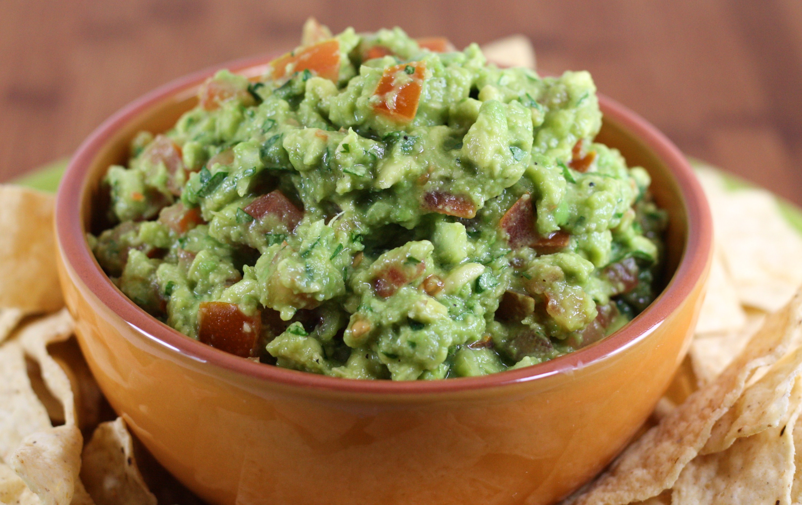

Guacamole

Description
Guacamole is a popular Mexican avocado salad or dip that’s quite easy to make. The base of most any guacamole is mashed or chunked avocado. Mix in onions, cilantro, chilies, seasonings and serve it with tortilla chips. This is a basic guacamole formula, but don't be afraid to mix in other things to make it your own.
Ingredients
- 3 avocados - peeled, pitted, and mashed
- 1 lime, juiced
- 1 teaspoon salt
- ½ cup diced onion
- 3 tablespoons chopped fresh cilantro
- 2 roma (plum) tomatoes, diced
- 1 teaspoon minced garlic
- 1 pinch ground cayenne pepper (Optional)
Steps
- In a medium bowl, mash together the avocados, lime juice, and salt. Mix in onion, cilantro, tomatoes, and garlic. Stir in cayenne pepper. Refrigerate 1 hour for best flavor, or serve immediately.
back